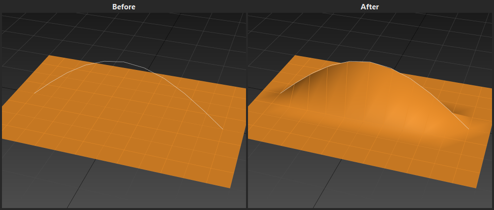

Gstretch
Lays a loop along a guide line you draw.
What it does
Gstretch stretches a selected loop along a line. Without a guide it straightens each loop between its two end vertices. With a guide it follows the line, and it can add vertices to match.

How to use it
- Open an Editable Poly (or an Edit Poly modifier) in the Modify panel and go to a sub-object level. Select a loop. To use a guide, first draw a Line or Editable Spline, name it so it starts with Guide (for example Guide01) and leave it visible.
- Right-click in the viewport and choose LoopTools9000, then the tool. The submenu is the first item in the lower-left part of the menu, and only shows at sub-object level.
- The tool runs at once with the settings you used last, and a settings box opens in the viewport. Change a setting and the result updates live.
- Press OK to keep it, Cancel to go back to the original shape, or Apply to keep it and run the tool again on top of the result.
Options
| Option | What it does |
|---|---|
| Method | Project drops the vertices onto the guide. Spread slides them along the guide. Spread evenly slides them along it and spaces them evenly. |
| Conversion | How the guide is turned into vertices: Distance, Limit vertices, Exact vertices or No simplification. |
| Distance | The gap between vertices when Conversion is Distance. |
| Min / Max | The fewest and most vertices allowed when Conversion is Limit vertices. |
| Vertices | The exact number of vertices when Conversion is Exact vertices. |
| Lock X / Y / Z | Stops vertices from moving along that axis. |
| Influence | How much of the result is applied, from 0 to 100 %. 100 % is the full effect. |
| Delete guides | Deletes the guide lines that were used when you press OK. |
Good to know
- Only the settings that match the chosen Conversion are shown.
- Every visible Line or Editable Spline whose name starts with Guide is used as a guide.
- Keeping the result is one undo step.
- Your settings are remembered for next time.
- It works on Editable Poly and on the Edit Poly modifier.